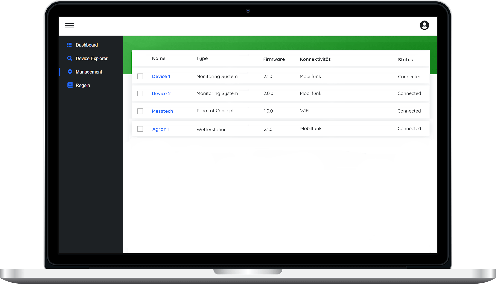

<section class="section section-bg-light-dark">
    <div class="container">
        <div class="row flex-lg-row-reverse justify-content-md-center align-items-lg-center">
            <div class="col-12 col-md-10 col-lg-5">
                <div class="section-heading section-heading--left">
                    <h2 class="__title">Device <span> Management</span></h2>
                    <p>
                        Das Device Management ermöglicht eine einfache Handhabung aller Produkte, Geräte und Sensoren.
                        Die gesamte Produktflotte lässt sich somit effizient verfolgen, überwachen, verwalten und organisieren.
                        Umfangreiche Möglichkeiten zur Verwaltung und Wartung werden ermöglicht, um in kürzester Zeit betriebsbereit zu sein und
                        eine lange Uptime zu gewährleisten
                    </p>
                    <ul class="check-list my-md-6">
                        <li><i class="ico-checked fontello-ok"></i>Skalierbares Flottenmanagement</li>
                        <li><i class="ico-checked fontello-ok"></i>Einfache Registrierung</li>
                        <li><i class="ico-checked fontello-ok"></i>Regelbasierte Event Engine</li>
                        <li><i class="ico-checked fontello-ok"></i>Management aus der Ferne</li>
                        <li><i class="ico-checked fontello-ok"></i>Planbare Over-the-Air-Updates</li>
                    </ul>
                </div>
            </div>

            <div class="spacer py-5 d-lg-none"></div>

            <div class="col-12 col-lg-7 text-center text-lg-left">
                <figure class="image-container">
                    
                </figure>
            </div>
        </div>
    </div>
</section>
